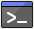

Aktualisiere alle Programme auf deinem Raspberry Pi und dann instaliere Scratch 2
Eine neue Raspbian Version und Scratch 2 fuer den Raspberry Pi
Um die neueste Version von Scratch 2 zu bekommen die den Raspberry Pi voll unterstuetzt muss das Betriebssystem des Raspberry auf den neuesten Stand gebracht werden. Das Betriebssystem wird Raspbian genannt und wird nun aufgefrischt. In English heist das Uprade.
Betriebssystem Upgrade fuer Raspbian
Befor es los geht teste das die Internet Verbindung funktioniert. Du kannst dir z.B. die Raspberry Pi Seite im Internet ansehen. Wenn das klappt geht es los.
Um Raspbian auf den neuesten Stand bringen zu koennen gibt man Text Befehle in einem Terminal ein. Das Terminal kann man starten wenn man das Terminal Icon  oben links in der Menuleiste anklickt.
Wenn das Termianl Fenster geoeffnet ist kann der erste Befehl mit der Tastatur im Terminal eingegeben werden.
{kind=link}
sudo apt-get update
Nachdem der Befehl eingegeben ist drueckt man
 auf der Tastatur wie Eltern es aus alten Zeiten noch kennen.
auf der Tastatur wie Eltern es aus alten Zeiten noch kennen.
Wenn die ENTER Taste erfolgreich gedrueckt wurde heisst es abwarten bis alles erledigt ist.
Wenn der erste Befehl beendet ist kann man direkt den naechsten eingeben.
1
Nachdem der neue Befehl eingegeben ist wieder auf der Tastatur druecken.
Diesmal wird es etwas laenger dauern bis alles erledigt ist. Zeit fuer einen Snack.
Eine kurze Erklaerung was Ihr gerade eingegeben habt:
sudoist ein Befehl am Anfang der Zeile um anzugeben das alles was danach kommt mit den Berechtigung eines Systemadministrators ausgefuehrt werden soll. Dies wird eigentlich nur gebraucht um Raspbian upzugraden oder um neue Programme zu installieren.apt-getist der eigenliche Befehl der ausgefuehrt wird. verwendet um das System upzugraden oder neue Programme zu instalieren. Nach apt-get kommt dann ein Zusatz der angibt was genau passieren soll.updatesorgt dafuer das Raspian nachschaut welche neuen Programme es gibt. installier wird aber nichts.dist-upgradesorgt dafuer das die neueste Betriebssystem Programme installiert werden.
Scratch 2 fuer den Raspberry
Um Scratch2 benutzen zu koennen muss die neue Version erst installiert werden.
Nachdem Raspbian auf den letzten Stand gebracht worden ist kann Scratch2 mit diesem Befehl im Terminal installiert werden:
sudo apt-get install scratch2
Nachdem die Installation abgeschlossen ist findet man Scratch2 im Menu.
Das Terminal Fenster kann man jetz schliessen.
Eine Beschreibung in Englisch was alles neu ist in Scratch2 fuer den Raspberry kann hier gefunden werden.